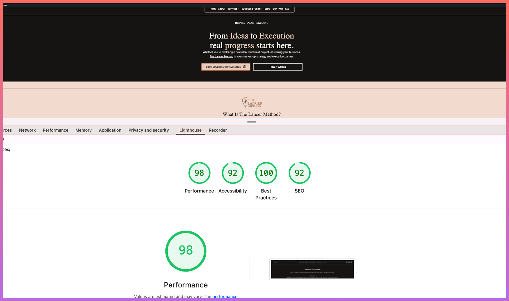
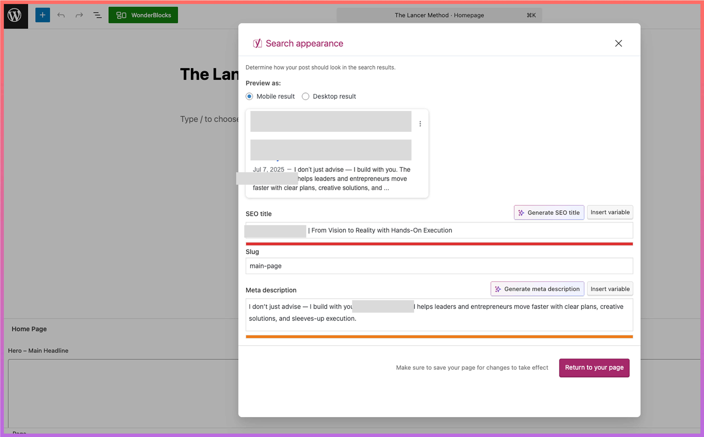

There’s a quiet happiness in seeing Lighthouse turn green. It’s not about perfection — it’s about proof that every little detail you cared about in the code actually mattered.
📊 The Moment of Truth
On The Lancer Method website, I ran the audit and saw:
✅ Performance: 91
✅ Accessibility: 98
✅ Best
Practices: 100
✅ SEO: 100

🛠️ What Made the Difference
-
Enqueueing scripts the clean way with
wp_enqueue_scripts -
Optimized images in
.webp+loading="lazy" - Yoast SEO configured with custom titles + descriptions
- ARIA labels for buttons & icons → Accessibility boost
- HTTPS enforced in
.htaccess

💻 Code That Counts
function lancer_enqueue_scripts() {
wp_enqueue_style('lancer-style', get_stylesheet_uri(), [], '1.0', 'all');
wp_enqueue_script('lancer-custom',
get_template_directory_uri() . '/assets/js/custom.js',
['jquery'], '1.0', true);
}
add_action('wp_enqueue_scripts', 'lancer_enqueue_scripts');
🌱 Why It Matters
Lighthouse doesn’t just measure speed. It measures care:
- Accessibility → real people can use the site.
- Performance → no one leaves because it loads too slow.
- SEO → the right audience actually finds you.
- Best Practices → a clean, future-proof foundation.
“Performance is not just about speed; it’s about respect for your users’ time.” – Google Web.Dev
😌 Happiness in Green
Developers celebrate commits, passing tests, and bug fixes. But there’s a special kind of joy in seeing four green circles in Lighthouse. It’s proof that the invisible work — meta tags, ARIA labels, lazy-loaded images — actually matters.